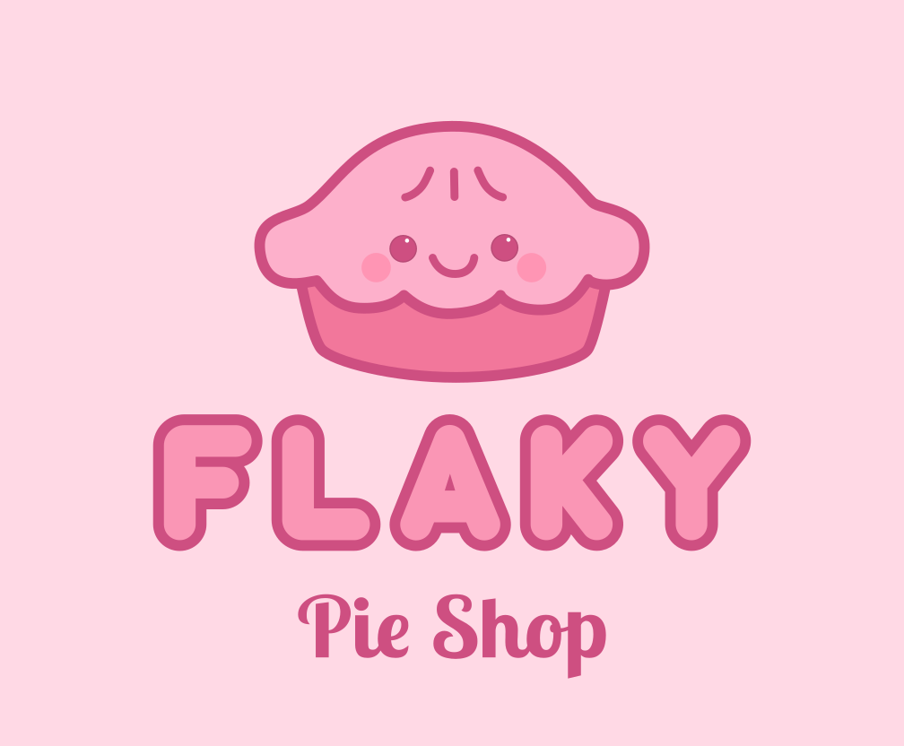

Hausgemachte amerikanische Pies & Süssigkeiten in Zürich – Abholung & Lieferung

Flaky ist eine kleine, gemütliche Hausbäckerei im Raum Zürich, spezialisiert auf amerikanische Pies und Süssigkeiten – von buttrig-blättrigen Teigen bis zu zähen, süssen Rice Krispies Treats.
Alles wird von Hand und mit hochwertigen Schweizer Zutaten hergestellt.
Online bestellen für Abholung in Wallisellen oder Lieferung innerhalb Zürichs.
Zu den saisonalen Favoriten gehören Kürbis-, Pekan-, Apfel- und Key-Lime-Pies.
Produkte
Amerikanische Desserts bedeuten pures Glück – einfach, ehrlich und voller Geschmack.
Der herbe Geschmack von Buttermilch und Frischkäse, die Süsse von Ahornsirup, all diese buttrige Köstlichkeit … sie bringen mich direkt zurück in meine Kindheit.
Es geht nicht um Perfektion – sondern um Wärme, Freude und das Gefühl von Zuhause.
Und Pies? Der blättrige Teig kombiniert mit einer cremigen oder fruchtigen Füllung ist einfach purer Genuss.
Jeder Pie und jedes Gebäck wird frisch auf Bestellung gebacken – ich backe nur nach Vorbestellung, damit jedes Stück die Zeit und Aufmerksamkeit bekommt, die es verdient.
Egal, ob Sie etwas Vertrautes suchen oder Lust auf eine neue Variante eines Klassikers haben – ich backe mit Liebe, nur für Sie.
Flaky Pies
Apfel-Streusel-Pie mit Zimt
Wärmende, gewürzte Äpfel unter einer buttrigen Streuseldecke.
Blaubeer-Ahorn-Chess-Pie
Der Geschmack eines Pfannkuchens mit Ahornsirup – in einem Stück Pie.

Schokoladen-Pekan-Pie
Die Fülle dunkler Schokolade mit gerösteten Pekannüssen und einer Prise Salz.
Saisonale Pies
Kürbis-Pie
Cremige, gewürzte Kürbisfüllung in einem knusprigen, blättrigen Teig – der Geschmack des Herbstes.
Süsses & Herzhaftes
Sesam Rice Krispies Treats
Klebrig-süsse, knusprige Riegel mit einer feinen Sesamnote.

Maisbrot mit Paprika und Feta
Herzhaft-süsses Maisbrot mit cremiger Paprika und würzigem Feta.

Amerikanische Biscuits
Klassisch, mit Cheddar & Schnittlauch oder mit Heidelbeeren – so luftig, so perfekt!
Individuelle Bestellung
Egal ob ein persönlicher Pie-Geschmack, eine kleine Süssigkeit für Gäste oder ein Dessert für einen besonderen Anlass – ich mache es möglich!
Über mich
Hallo, ich bin Marianna 👋
Forscherin von Beruf – und Konditorin aus Leidenschaft.
Ursprünglich aus Italien, habe ich eine professionelle Pâtisserie-Ausbildung abgeschlossen, bevor ich 2016 in die Schweiz zog, um meine Forschungskarriere fortzusetzen.
Schon als Kind habe ich viel Zeit in den USA verbracht – dort habe ich meine Liebe zu amerikanischen Pies, Cookies und all den süssen Dingen entdeckt.
Jetzt, als frischgebackene Mutter, habe ich meine kleine Hausbäckerei eröffnet – einen Ort, an dem ich meine Leidenschaft fürs Backen teilen kann und gleichzeitig wertvolle Zeit mit meinem Baby verbringe.